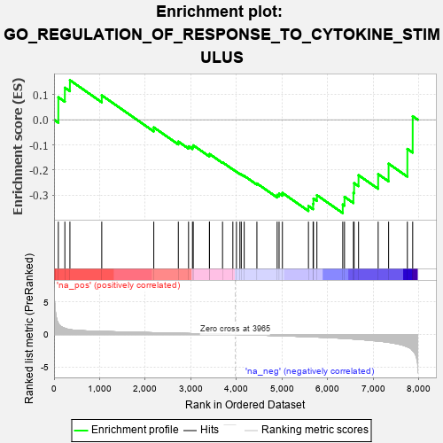
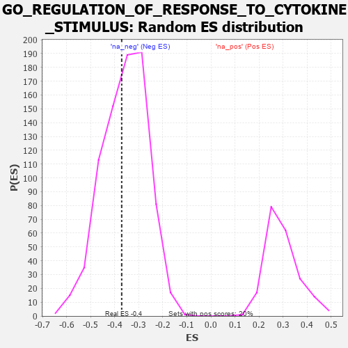

| | | Dataset | 7d |
| Phenotype | NoPhenotypeAvailable |
| Upregulated in class | na_neg |
| GeneSet | GO_REGULATION_OF_RESPONSE_TO_CYTOKINE_STIMULUS |
| Enrichment Score (ES) | -0.37080458 |
| Normalized Enrichment Score (NES) | -1.0338298 |
| Nominal p-value | 0.4258794 |
| FDR q-value | 0.82371193 |
| FWER p-Value | 1.0 |
Table: GSEA Results Summary

Fig 1: Enrichment plot: GO_REGULATION_OF_RESPONSE_TO_CYTOKINE_STIMULUS
Profile of the Running ES Score & Positions of GeneSet Members on the Rank Ordered List
| PROBE | GENE SYMBOL | GENE_TITLE | RANK IN GENE LIST | RANK METRIC SCORE | RUNNING ES | CORE ENRICHMENT | | 1 | UBE2K | | | 94 | 1.739 | 0.0894 | No |
| 2 | DCST1 | | | 237 | 0.959 | 0.1273 | No |
| 3 | CNOT7 | | | 348 | 0.750 | 0.1571 | No |
| 4 | TAF9 | | | 1046 | 0.475 | 0.0969 | No |
| 5 | SYK | | | 2186 | 0.278 | -0.0304 | No |
| 6 | SLIT2 | | | 2724 | 0.195 | -0.0867 | No |
| 7 | LIFR | | | 2948 | 0.158 | -0.1056 | No |
| 8 | PIAS4 | | | 3034 | 0.145 | -0.1079 | No |
| 9 | ABCE1 | | | 3051 | 0.143 | -0.1016 | No |
| 10 | MED1 | | | 3405 | 0.089 | -0.1409 | No |
| 11 | TRAIP | | | 3408 | 0.088 | -0.1360 | No |
| 12 | DHX9 | | | 3693 | 0.044 | -0.1692 | No |
| 13 | IFIH1 | | | 3919 | 0.006 | -0.1972 | No |
| 14 | DDX58 | | | 3998 | -0.007 | -0.2066 | No |
| 15 | CSF1 | | | 4074 | -0.019 | -0.2149 | No |
| 16 | TRAF1 | | | 4104 | -0.024 | -0.2172 | No |
| 17 | GFI1 | | | 4168 | -0.037 | -0.2230 | No |
| 18 | CDC37 | | | 4446 | -0.084 | -0.2530 | No |
| 19 | SLIT3 | | | 4890 | -0.175 | -0.2987 | No |
| 20 | CASP1 | | | 4932 | -0.185 | -0.2931 | No |
| 21 | KLF4 | | | 5005 | -0.198 | -0.2906 | No |
| 22 | SPHK1 | | | 5576 | -0.339 | -0.3426 | Yes |
| 23 | CASP8 | | | 5678 | -0.369 | -0.3339 | Yes |
| 24 | MADD | | | 5686 | -0.371 | -0.3132 | Yes |
| 25 | TLR2 | | | 5761 | -0.395 | -0.2995 | Yes |
| 26 | ELF1 | | | 6328 | -0.587 | -0.3367 | Yes |
| 27 | BIRC3 | | | 6366 | -0.603 | -0.3062 | Yes |
| 28 | OTOP1 | | | 6562 | -0.690 | -0.2907 | Yes |
| 29 | ROBO1 | | | 6577 | -0.699 | -0.2517 | Yes |
| 30 | RFFL | | | 6674 | -0.749 | -0.2202 | Yes |
| 31 | PXDN | | | 7104 | -1.001 | -0.2160 | Yes |
| 32 | CYLD | | | 7333 | -1.206 | -0.1746 | Yes |
| 33 | RNF31 | | | 7744 | -1.895 | -0.1159 | Yes |
| 34 | TRAF2 | | | 7861 | -2.481 | 0.0139 | Yes |
Table: GSEA details [plain text format]

Fig 2: GO_REGULATION_OF_RESPONSE_TO_CYTOKINE_STIMULUS: Random ES distribution
Gene set null distribution of ES for GO_REGULATION_OF_RESPONSE_TO_CYTOKINE_STIMULUS